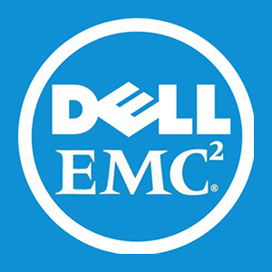
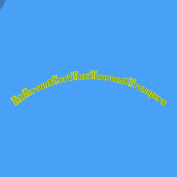
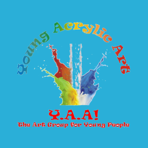
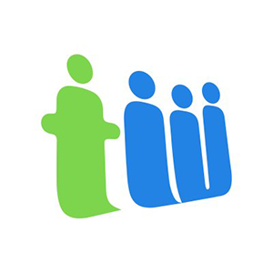

Building circuit boards for Horner APG projects and coding on pre-market test projects & experience in R&D.
Web Developer (Internship)
Participation in the national Young Scientist competition resulted in an invitation to this Microsoft Internship Workshop where there was a focus on developing critical links in the innovation process, commercialisation of skills, professional and career development skills along with software development skills.
Autism Start
Autism Start provides practical expert advice to parents and practitioners supporting children and teenagers with autism. Our mission is to provide easy to follow step-by-step guides for teaching communication skills, social skills, academic learning and independent living skills. Our team is made up of board certified behaviour analysts, special education teachers and a senior clinical psychologist. The guides and advice on this site are the result of years and years of experience. The team has worked directly with over 500 children and teenagers with autism. Our advice is based on the all the things these amazing children taught us over the years.

Software Developer (Internship)
Throughout this internship gained experience in setting up networks and servers on a huge scale. Worked with a number of varied departments in areas such as Networking, Coding, Engineering and HR. Redesigned and built the Visitors Portal Website to improve information and interactivity through social sharing and videos.
Software Developer (Internship)
Design and development of an interactive internal internet website for EMC employees. Employees interact with the website by creating an account, searching for employees and making mentor requests. Built using PHP, Html5, CSS and Microsoft Database.
Web Developer
Design and development of an interactive website for Clean Energy Ireland. Building a redesigned website with more social features and better coding standards. Mobile site, improved SEO and updated server software along with a custom cms for the staff to use. Built in Php , backbone and html.
Software Developer
Designed a custom encryption algorithms to help with encrypting data for password restart in the enterprise market. Tied up patches of code along with reviewing code for development .

Application Developer
Designed, developed and created the branding for AllAroundCorkTaxiToursandTransfers.com, a new taxi website in Cork. The site relies on social network and a huge database of locations which I also developed. Used Html5, knockout.js along others.

Web Developer
Redesigning the online official website of well-renowned singer Declan Sinnott. As an internationally performing artist the objective was to grow online presence, support greater interaction with fans and centralize communication, cross-updating from Twitter, Facebook and his personal blog.
Web Developer
Redesigning the online official website of well-renowned singer Declan Sinnott. As an internationally performing artist the objective was to grow online presence, support greater interaction with fans and centralize communication, cross-updating from Twitter, Facebook and his personal blog.

Web Engineer (Internship)
While working at Teamwork as part of internship.
I worked in several parts of the company.
Working on the Teamwork Chat product fixing bugs and working in an agile team.
I also worked on developing the Teamwork Desk Docs. This was done with using Golang, Gulp and Swagger.
I also worked on developing/redesign the Teamwork.com website and cms written in Coldfusion, Coffeescript Html, Less along others.
Software Engineer (Part Time)
Worked part time while studying in 4th year of my college degree in computer science.
Primarily responsible for the development for the suite of importers the Teamwork.com Projects team used along with developing new features and pages for Teamwork.com and the Cms that runs it. These included a rebuild of the signup code, adding Google signup support and new features and ux changes. Responsibilities also included creating Coldfusion/Golang based server-side solutions, Coffeescript based & javascript based server-side solutions, graphic design and SEO implementation.
Software Engineer
Software Engineer, primarily responsible for the development for the suite of importers the Teamwork.com Projects team used along with being dropped into other teams to help. These included a rebuild of the signup code, adding Google signup support and new features and UX changes. Responsibilities also included creating Coldfusion/Golang based server-side solutions, graphic design and SEO implementation.ing new features and pages for Teamwork.com and the Cms that runs it. These included a rebuild of the signup code, adding Google signup support and new features and ux changes. Responsibilities also included creating Coldfusion/Golang based server-side solutions, Coffeescript based & javascript based server-side solutions, graphic design and SEO implementation.
Teamwork.com Website Product lead & Sofware Engineer
Product and engineering lead for Teamwork.com's website (They started treating it as a product). I lead and developed a rebuild of the stack.
Primarily responsible for the development for the suite Teamwork.com's website (They started treating it as a product). I lead and developed a rebuild of the stack. Responsibilities also included creating Coldfusion/Golang based server-side solutions, Coffeescript based & javascript based server-side solutions, graphic design and SEO implementation.